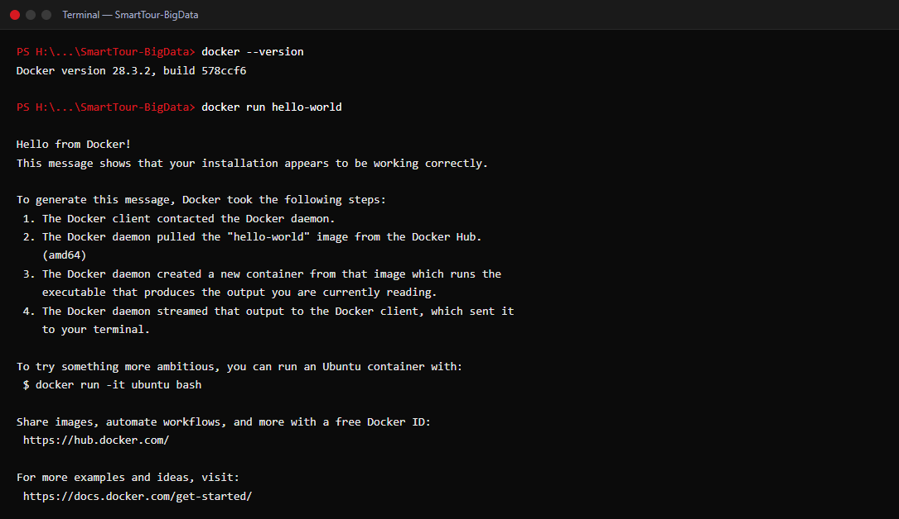
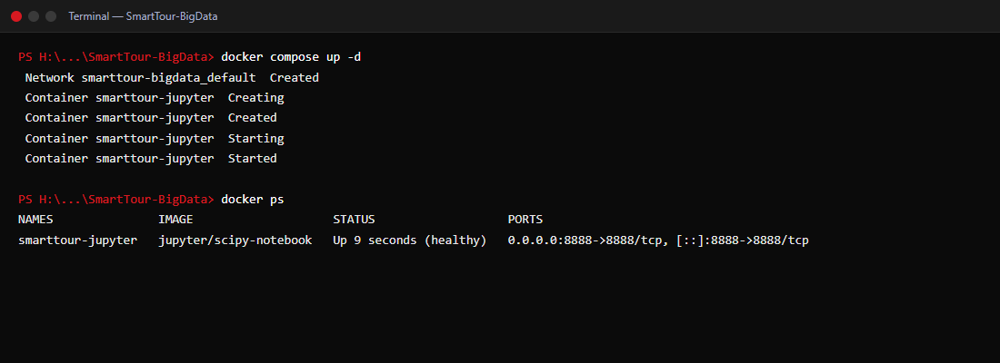
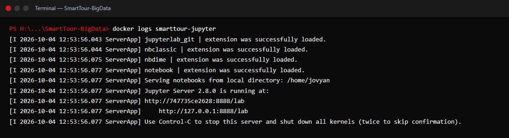
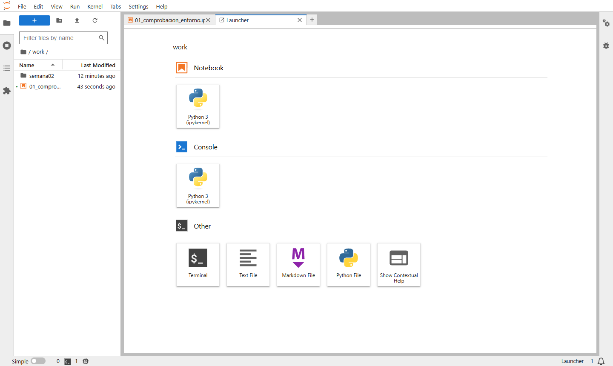
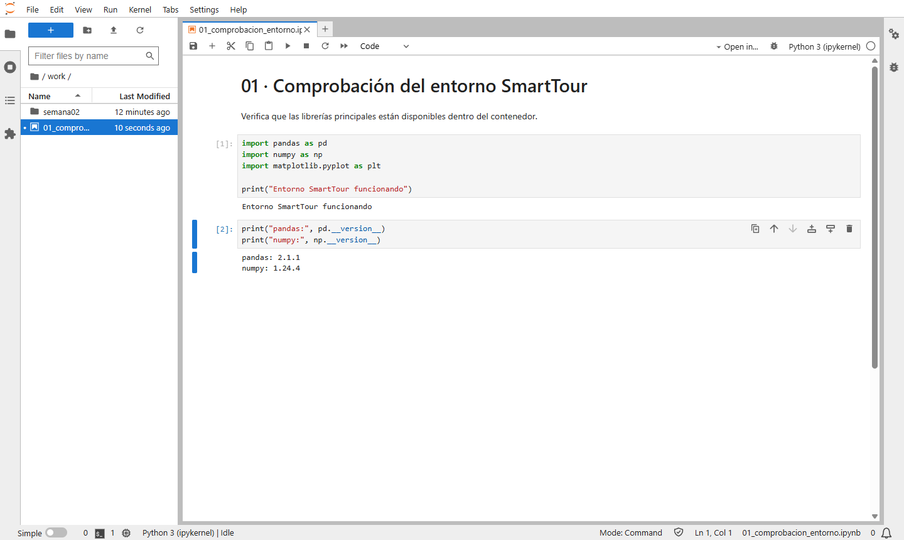
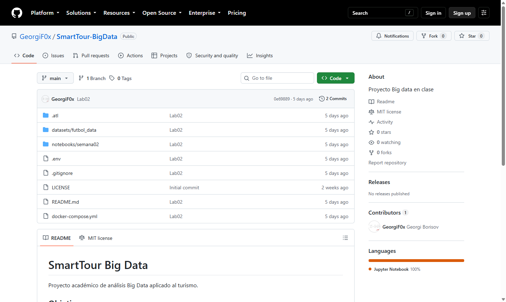

LAB01
Un entorno de datos que cualquiera levanta con un solo comando.
«Un entorno reproducible donde cualquier miembro del equipo pueda descargar el proyecto y empezar a trabajar sin instalar herramientas a mano.»
Código versionado, historial y repositorio remoto público.
Las herramientas viven en un contenedor aislado.
Un archivo describe cómo se levanta el servicio.
Python, Pandas y NumPy desde el navegador.
04/09
Repositorio y estructura del proyecto
- Repositorio público: también sirve de portfolio.
- README: qué es, para qué sirve, cómo se instala y cómo se ejecuta.
- Licencia MIT: qué puede hacer otra persona con el código.
.gitignore: excluye__pycache__/,.ipynb_checkpoints/y.env.- Git no versiona carpetas vacías: cada una lleva un
.gitkeep.
SmartTour-BigData/ ├── docker-compose.yml ├── datasets/ # datos del proyecto ├── scripts/ # programas Python ├── notebooks/ # análisis · montado en Jupyter ├── docs/ # documentación ├── laboratorios/ # enunciados y presentaciones ├── README.md ├── LICENSE # MIT └── .gitignore
05/09
Docker instalado y respondiendo
docker --versiondevuelve Docker 28.3.2.docker run hello-worlddescarga la imagen, crea un contenedor y muestra Hello from Docker!- Confirma que el cliente, el daemon y el acceso a Docker Hub funcionan.

06/09
Un servicio declarado en un archivo
- image: Python, Jupyter, Pandas, NumPy, Matplotlib y Scikit-learn ya instalados.
- ports: el 8888 del contenedor se publica en
localhost:8888. - volumes:
notebooks/ydatasets/se comparten; lo guardado en Jupyter aparece en el repositorio. - token vacío: cómodo en local, nunca en un servidor expuesto.
services:
jupyter:
image: jupyter/scipy-notebook
container_name: smarttour-jupyter
ports:
- "8888:8888"
volumes:
- ./notebooks:/home/jovyan/work
- ./datasets:/home/jovyan/datasets
environment:
- JUPYTER_ENABLE_LAB=yes
command:
start-notebook.sh
--NotebookApp.token=''
07/09
El contenedor arranca
docker compose up -dcrea la red y el contenedorsmarttour-jupyter.docker pslo muestra Up (healthy) con el puerto 8888 publicado.- Los logs confirman Jupyter Server 2.8.0 is running.


07/09
JupyterLab en localhost:8888
- La carpeta
work/es la carpeta localnotebooks/montada como volumen. - Ni Python ni Jupyter están instalados en el equipo: todo vive dentro del contenedor.

08/09
Primer notebook ejecutado
import pandas as pd
import numpy as np
import matplotlib.pyplot as plt
print("Entorno SmartTour funcionando")
- Las tres librerías se importan sin errores.
- Dentro del contenedor: pandas 2.1.1 y numpy 1.24.4.

09/09
Cambios guardados en GitHub
git add . git commit -m "Creación entorno inicial SmartTour" git push

Todo el entorno, comprobado
| Paso | Tarea | |
|---|---|---|
| 01–02 | Repositorio público con README, licencia MIT y .gitignore, clonado en local | |
| 03–04 | Estructura de carpetas y README documentado | |
| 05 | Docker Desktop instalado y hello-world ejecutado | |
| 06–07 | docker-compose.yml y JupyterLab en localhost:8888 | |
| 08 | Notebook de comprobación ejecutado | |
| 09 | Cambios subidos a GitHub |
R1
¿Por qué es importante utilizar Docker en proyectos Big Data?
Un proyecto Big Data combina muchas piezas (Python, librerías de análisis, Spark, bases de datos, colas de mensajes) cuyas versiones tienen que encajar entre sí. Docker empaqueta cada pieza con exactamente lo que necesita, así que el entorno es idéntico en el portátil de cada desarrollador, en el servidor de pruebas y en producción.
Además facilita escalar: el mismo contenedor se replica en varios nodos de un clúster, y Docker Compose o Kubernetes orquestan varios servicios a la vez. Desaparece el clásico «en mi máquina funciona».
R2
¿Qué ventajas tiene un contenedor frente a instalarlo todo a mano?
Todo el equipo usa las mismas versiones: hemos levantado pandas 2.1.1 sin instalar nada.
Un docker compose up sustituye horas de instalación y configuración.
No ensucia el sistema ni choca con otros proyectos que usan otras versiones.
Si algo se rompe, se borra y se recrea. La configuración queda escrita en el repositorio.
R3
¿Por qué es importante organizar bien las carpetas de un proyecto?
Una estructura clara hace que cualquiera que llegue al proyecto sepa dónde está cada cosa sin preguntar: los datos en datasets/, el código reutilizable en scripts/, los análisis en notebooks/ y la documentación en docs/.
También tiene efectos técnicos: separar datos y código permite excluir de Git los ficheros grandes, y Docker monta solo notebooks/ y datasets/ dentro del contenedor. Cuando SmartTour crezca (captura, procesamiento, modelos, cuadros de mando), esta organización evitará el desorden.
R4
¿Qué diferencia hay entre una imagen Docker y un contenedor?
La imagen es la plantilla de solo lectura (sistema base, librerías, configuración). El contenedor es una instancia en ejecución creada a partir de ella, con su propia capa de escritura. De una imagen salen tantos contenedores como queramos; se paran, se borran y se vuelven a crear sin tocar la imagen.
git clone + docker compose up
y SmartTour está en marcha.
Siguiente fase del proyecto: captura y almacenamiento de datos turísticos.